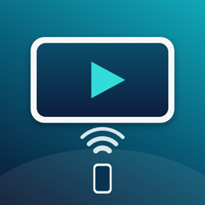

Terms of Use
Last updated: 18 November 2026
1. The app
CarMirror is a media player and screen-mirroring tool. It does not provide, host, sell or recommend any channels, films or other content. You add your own playlists and servers and you are solely responsible for having the right to access and watch them.
2. Safety
Use CarMirror only as a passenger or when the car is parked. Never watch video or operate the app while driving, and always follow local traffic laws.
3. CarMirror Pro
Pro is offered as an auto-renewing subscription (monthly or yearly) or a one-time Lifetime purchase. Payment is charged to your Apple Account at confirmation. Subscriptions renew automatically unless cancelled at least 24 hours before the end of the current period; your account is charged for renewal within 24 hours before the period ends. Any unused part of a free trial is forfeited when you subscribe. Manage or cancel in Settings › Apple Account › Subscriptions.
4. Licence
Your use of CarMirror is also governed by Apple’s Licensed Application End User License Agreement.
5. No warranty
CarMirror is provided “as is”. Playback and mirroring depend on your network, the stream source and your car screen, and may not work with every car or stream.
6. Contact
شروط الاستخدام
التطبيق: CarMirror مشغّل وسائط وأداة لعرض الشاشة، ولا يوفّر أو يستضيف أو يبيع أو يرشّح أي قنوات أو محتوى. أنت تضيف قوائمك وخوادمك وتتحمل وحدك مسؤولية امتلاك حق الوصول إليها ومشاهدتها.
السلامة: استخدم CarMirror كراكب أو عندما تكون السيارة متوقفة فقط. لا تشاهد الفيديو أو تستخدم التطبيق أثناء القيادة أبدًا، والتزم بأنظمة المرور.
CarMirror Pro: اشتراك يتجدد تلقائيًا (شهري أو سنوي) أو شراء لمرة واحدة مدى الحياة. يُخصم المبلغ من حساب Apple عند التأكيد، ويتجدد الاشتراك تلقائيًا ما لم يُلغَ قبل 24 ساعة على الأقل من نهاية الفترة. يمكنك الإدارة أو الإلغاء من الإعدادات › حساب Apple › الاشتراكات.
الترخيص: يخضع استخدامك أيضًا لاتفاقية ترخيص المستخدم النهائي القياسية من Apple.
التواصل: support@darezone.ai